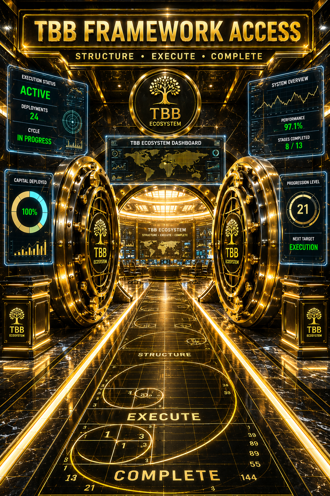

Observation created curiosity. Participation creates understanding.
The TBB Framework is a structured execution ecosystem built around disciplined deployment, progression management, capital positioning, and operational continuity.
Every component operates inside one unified environment designed to transform structure into controlled execution.
Live execution monitoring
Verification tracking
Operational reporting
Capital allocation
Exposure management
Profit projection
Stage advancement
Cycle continuity
Scaling logic
Execution structures
Position management
Operational control
Unified framework environment
Integrated workflow
Operational visibility
Capital Deployed represents the amount currently allocated to an active execution cycle.
An Execution Cycle is a complete operational sequence consisting of deployment, monitoring, progression management and cycle reset.
The Bonus Ball Environment is the monitored operational space where positioning activity is tracked and execution continuity is maintained.
Progression levels help maintain operational discipline by ensuring every deployment follows a predefined structure.
The Dashboard provides visibility into active deployments, progression status, cycle history and operational performance.
✓ Structured thinkers
✓ Disciplined operators
✓ Progression users
✓ Framework builders
✓ Individuals seeking operational consistency
Gain access to the TBB Framework environment, operational tools, dashboards, and supporting ecosystem resources.
Learn how the framework transforms structured input into disciplined execution through connected operational components.
Apply the framework through controlled positioning, progression management, exposure control, and operational continuity.
Develop repeatable execution cycles supported by structure, process discipline, and long-term operational consistency.
You have explored the ecosystem.
You have seen the components.
You have followed the execution process.
The next decision belongs to you.